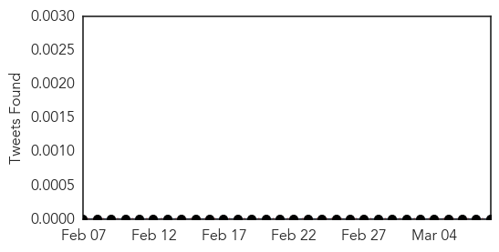
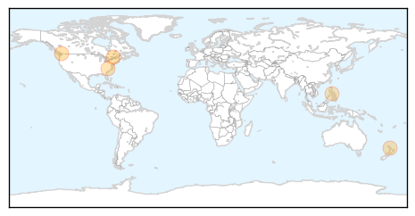
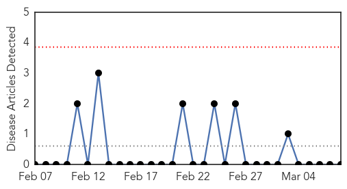

Measles
30-Day Web Trend
3 alerts, 3 warnings
30-Day Twitter Trend
0 alerts, 0 warnings

Article Locations
Article Confidences

Top Articles:
- 0.988
- Measles outbreak in east Fraser Valley prompts warning
- 0.988
- Measles outbreak in east Fraser Valley prompts warning
- 0.976
- Health authority warns Fraser East communities of measles outbreak
- 0.877
- Experts: Anti-vaccine view a peril
- 0.860
- Principals warned over measles
- 0.779
- Health unit can’t say if measles student had vaccine exemption
Top Tweets:
-
No tweets found for Mar 08, 2014
Ebola
30-Day Web Trend
0 alerts, 0 warnings

30-Day Twitter Trend
0 alerts, 0 warnings

Article Locations

Article Confidences

Top Articles:
-
No articles found for Mar 08, 2014
Top Tweets:
-
No tweets found for Mar 08, 2014